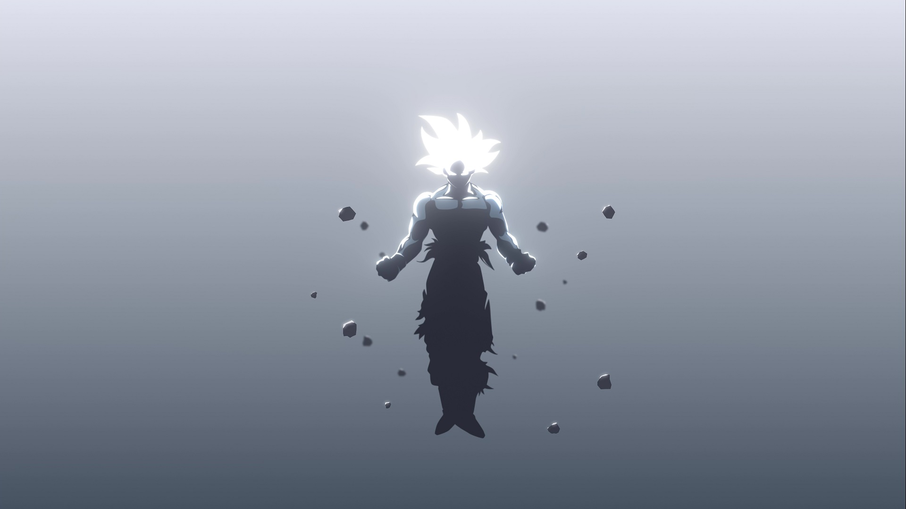
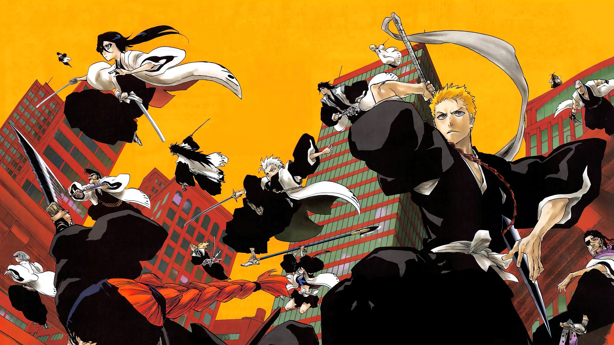
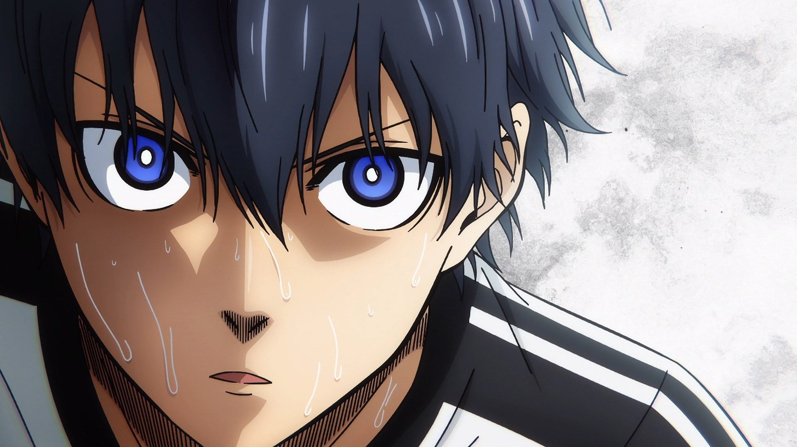
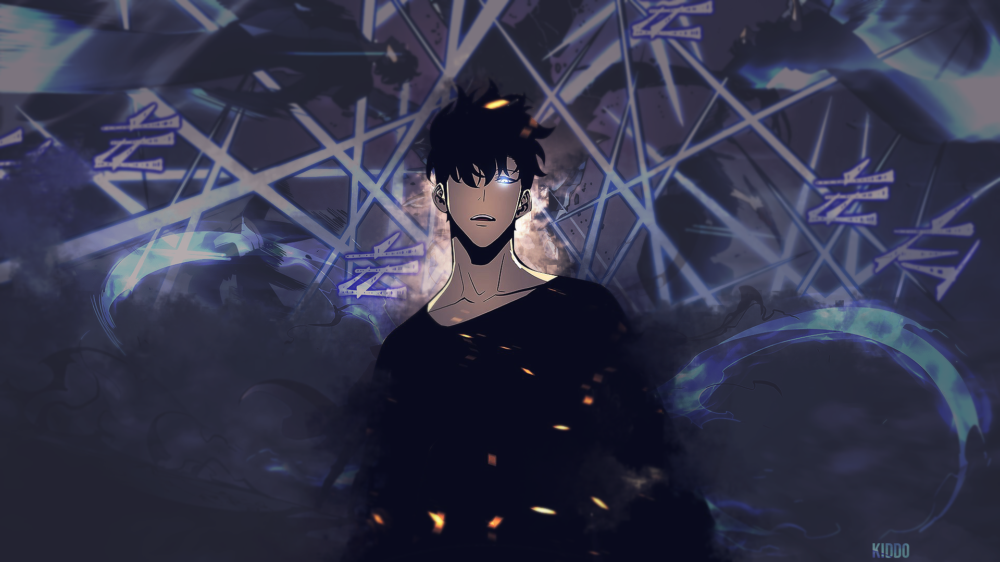

GOKU
Born as a member of the Saiyan race on Planet Vegeta, under the name Kakarot,[nb 24][nb 25]
he is sent to Earth as an infant prior to his homeworld's destruction at the hands of Frieza (ordered by Beerus[3]).
Upon his arrival on Earth, the infant is discovered by Son Gohan,
who becomes the adoptive grandfather of the boy and gives him the name Goku.
The boy is initially full of violence and aggression due to his Saiyan nature,
until an accidental head injury turns him into a cheerful, carefree person.
Grandpa Gohan's kindness and teachings help to further influence Goku,
who later on names his first son Gohan in honor of him.

BLEACH
The series aired on TV Tokyo from October 2004 to March 2012, spanning 366 episodes.
The story follows the adventures of Ichigo Kurosaki after he obtains the powers of a Soul Reaper
a death personification similar to the Grim Reaper—from another Soul Reaper, Rukia Kuchiki.

Isagi Yoichi
After the Blue Lock Eleven played against the Japan U-20,
Isagi is ranked as one of the top players in Blue Lock and
plays as an offensive midfielder on Bastard München during the Neo Egoist League.
Unlike his fellow competitors who were handpicked by Anri Teieri after watching them play,
Isagi was chosen personally by Jinpachi Ego himself after seeing him play.
Isagi is an ideal candidate for the type of striker Ego strives to create.

Sung Jin-woo
Sung Jinwoo (성진우) is the main protagonist of Solo Leveling.
Originally an infamously weak E-Rank Hunter, he got the chance of a lifetime when he was selected as the Player of the System,
giving him the unique ability to grow in strength without restraint. As a result,
by taking advantage of the opportunities offered to him by the System,
Jinwoo eventually rose to power as humanity's greatest hunter and the second Shadow Monarch.